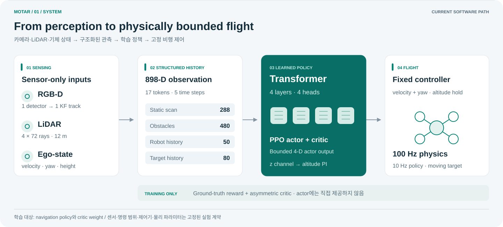
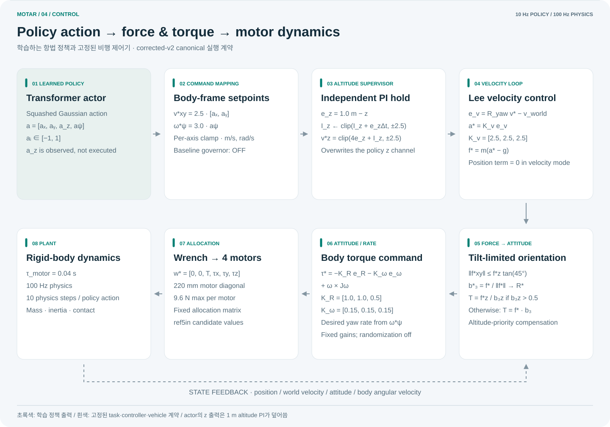

Structured perception
RGB-D target track, 4×72 LiDAR, ego velocity·yaw·height를 898-D history로 구성합니다.
카메라와 LiDAR만으로 밀집 장애물 속 움직이는 표적을 추적하는 드론 정책. 성공률 경쟁보다 언제, 왜 실패하는지를 재현 가능한 수치로 설명합니다.
01 · OVERVIEW

02 · 3D ARENA
corrected-v2의 40×40×3 m arena와 navrl_band 배치 규칙을
브라우저에서 재현합니다. 표적은 10 Hz 고정 simulation clock에서 움직이고 화면만 보간합니다.
기본 bounded 모드는 가속도·선회율·1 s 충돌 예측을 반영한 새 trajectory lineage입니다.
pursuer와 physical-style은 설명용이며, 이 화면은 PPO 실행 영상·PhysX 재생·성능 측정값이 아닙니다.
Loading 3D arena…
Bounded: 4.0 m/s², 150°/s, 1.0 s lookahead, 0.77 m centre-clearance. 모드 간 결과 비교는 성능 비교가 아닙니다.
03 · METHOD
RGB-D target track, 4×72 LiDAR, ego velocity·yaw·height를 898-D history로 구성합니다.
17개 token을 4-layer Transformer가 처리합니다. PPO는 actor와 asymmetric critic weight를 학습합니다.
출력은 유한한 body velocity와 yaw-rate 명령이며 altitude PI와 Lee controller를 거쳐 동역학에 적용됩니다.

aₓ, aᵧ, aψ가 수평 속도와 yaw-rate를 정합니다. actor가 출력한 a_z는 실행되지 않고 altitude PI가 수직 명령을 덮어씁니다.
body-frame setpoint를 yaw로 world frame에 회전한 뒤 실제 world velocity와 비교합니다. 고정 gain Kv=[2.5,2.5,2.5]로 가속도와 요구 힘을 만듭니다.
요구 힘의 수평 성분을 45° 이내로 제한합니다. upright 상태에서는 T=fz/b3z 보상으로 기울어진 동안에도 수직 힘을 우선 보존합니다.
attitude/rate error가 body torque가 되고 allocation matrix가 네 모터 명령으로 바꿉니다. 모터는 0.04 s 1차 지연을 거쳐 100 Hz rigid-body physics에 적용됩니다.
04 · EVIDENCE
timeout bootstrap과 corrected-v2 의미론 검증
2-D 기하 경로만 의미하며 동역학은 미포함
95% CI [−1.752, +1.723], 비열등 gate 통과
camera-range 진단; primary gate 미달로 inconclusive
실제 비행 성능, sim-to-real 성공, 300-bar 전 구간 성능, Transformer의 보편적 우월성. 실제 기체가 미조립이고 실제 센서 로그가 없으므로 현재 software-only gate의 판정은 SYNTHETIC_ONLY이며 실기 성능을 뜻하지 않습니다.
05 · CONTRACT
ref5in은 hardware-informed simulation candidate입니다. CAD/BOM, 실측 관성·추력, 열·전원 및 비행 식별을 완료한 실제 플랫폼 사양이 아닙니다.